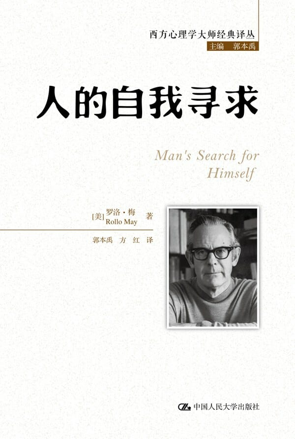

注：【】部分为笔者心得，非原文摘抄。
- 冒险会导致焦虑，但不去冒险却将会失去个人的自我……而在最高的意义上，冒险正是为了意识到个人的自我。——索伦·克尔凯郭尔
- 你对自己的不健康的爱将会让孤独成为你的牢狱。——弗里德里希·威廉·尼采
- 空虚不仅指许多人不知道他们想要什么，而且还指他们通常对于自己的感受没有任何清晰的概念。
- 我们有必要在自身中找到一个力量中心。
- 【不喜欢改变的人常常忽略了一成不变将会带来的心理危机。】
- 空虚和无力情形的最大危险是，它迟早会导致痛苦的焦虑和绝望，而且如果不加以纠正，它最终会导致人类最珍贵的品质无效甚至被排斥。它最终的结果是个体心理上的萎缩和枯竭，要不然就会屈服于某种具有破坏性的权威主义。
- 孤独感和空虚感之间存在密切的关系。
- 人类作为一种生物社会学意义上的哺乳动物，不仅在漫长的童年时代需要依赖于其他人，而且同样也需要从这些早期关系中获得他对自己的意识，而这种意识是他在以后生活中定位自己的能力的基础。
- 对孤独的恐惧大部分是源于害怕失去自我觉知的焦虑。
- 除非空洞和孤独使我们遭受那种被称为焦虑的特有的心理上的痛苦和混乱的折磨，否则它干扰不到我们。
- 当一个人在一段时间内不断地陷入焦虑，他的身体就很容易遭受心身疾病。而当一个群体不断地陷入焦虑，而不能采取达成一致意见的建设性步骤时，其成员早晚会相互对抗。
- 焦虑可以呈现出各种形式和强度，因为它是人类在其生存遭受危险时所作出的基本反映，是当人类视为与其生存同等重要的某种价值观遭遇危险时所作出的基本反映。
- 大多数神经症焦虑都来源于潜意识的心理冲突。
- 对付神经症焦虑的方法是，找出某人害怕的最初真实体验，然后穷究这种畏惧使之成为正常的焦虑或恐惧。
- 加强自我意识，找到自我力量的中心，这些中心能使我们抵制住周围的混乱和困惑。
- 每个人的独特能力和创造力必须重新得到发现，并用作其工作的基础，为社会的利益做出贡献，而不是是指消融在顺从的集体主义熔炉中。
- 如果没有伦理学和自我理解方面相应的发展，人类在技术上的巨大进步将会导致虚无主义。
- 一个人是通过他的“风格”而被认识的。
- 一个具有内在力量的人总能对周围人的恐慌起到巨大的镇定作用。
- 自我意识是人类独特的标志。
- 自我意识的能力使我们能够像他人看待我们那样来看待自己，并能够对他人进行移情。
- 只有当人在自己的意识中做出计划和选择时，他才能实现自己的潜能。
- 活力是永恒的快乐。
- 生活的目标是快乐，而不是幸福，因为快乐是一种伴随着我们实现自己作为人的本性而产生的情感。
- 自我谴责为个体的自我憎恨提供了一种合理化，并因此强化了他憎恨自己的倾向。
- 与整个身体的反应相一致以及与自己和世界及周围他人的情感关系的感觉相一致，就是踏上了一条健康之路。
- 一个人越具有自我意识，他就会越有活力。
- 许多人终日忙碌，将其作为掩饰焦虑的一种方式；他们的能动性是一种逃避自我的方式。
- 实现自我过程中的人都会经历一个“超越自我”的过程。
- 生命总是忙于使自己永久存在并且超越自己，如果它所做的一切只是为了维持自己的话，那活着就仅仅是没有死而已。——西蒙·德·波伏瓦
- 能够坦诚地面对自己的仇恨是非常重要的。
- 自由绝对不是责任的对立面。
- 自由意味着开放，它是一种成长的准备状态；它意味着可以变通，意味着乐于为了人类更大的价值而作出改变。
- 自由是人参与他自己的发展的能力。
- 一个人的自我意识越弱，他就会越不自由。
- 自由表现在我们如何与生活中的决定性现实发生联系的方式上。
- 自由是成为真正的我们的能力。
- 人类的心里自由是在于他那个世界中的其他重要的人之间持续不断地相互作用中发展起来的。
- 自由不是自动出现的，它是通过努力获得的。而且它不是一朝一夕就获得的，它需要通过每天的努力才能获得。
- 只有那些每天都在重新征服自由和存在的人，才能获得自由和存在。——歌德
- 那些产生持久的快乐与内在安全感的事情与外在的、变化无常的公众舆论标准几乎没有任何关系。
- 道德意识也只有以内心冲突和焦虑为代价才能获得。
- 通常情况下，那些要求得到照顾的人，同时也会努力通过各种微妙的方式获得支配他人的权力。
- 一个人的自我意识越强，他就越能从其父辈们那里获得智慧并将其转化为自己的东西。
- 一个人越深刻地挖掘他自己的体验，他的反应和成果就越具独特性。
- 在实际生活中，真正的价值观是我们所体验到的与我们活动的现实密切相关的东西，而任何口头上的讨论都是次要的。
- 只有当一个人选择了这个行动并在意识之中确定了这个目标时，他的行动才会具有信念和力量，因为只有这样他才能真正地信奉他所做的事情。
- 如果一幅画不诚实，那它就绝不可能是美的，而只有它是诚实的，也就是说，表现了作者直接的、深切的以及独特的感觉与体验，那么它就至少拥有了美的开端。
- 在一个焦虑的时代，在一个道德群集与个人孤立的时代，勇气是一种必不可少的东西。
- 个人勇气发展的最大障碍在于不得不接受一种并非植根于他自己的力量的生活方式。
- 在我们这个顺从的时代，勇气的标志是人坚持自己信念的能力——并非固执地或对抗性地坚持，也不是一种报复反击的态势，而仅仅是因为这些是他所坚信的。
- 男女之间成熟的爱的一个要素是，对对方的价值观和价值的肯定。
- 爱包括两个要素：一是彼此的价值和美德；二是自己在与对方的关系中所获得的欢乐和幸福。
- 当“爱”被用于派遣孤独，其目的的达成只能以双方空虚的增加为代价。
- 爱是主动的选择，依赖不等于爱。
- 真理的发现在很大程度上依赖于探究者的内在特质。
- 一个人想要认识真理，诚实就是必需的。
- 人是在作为一个思考——感受——行动的统一体向前发展时体验真理的。
- 一个人越能够有意识地指导自己的生活，他在分配时间时就越能够获得建设性的利益。
- 越不自由，越无意识。
- 无论老少长幼、短命或长寿，都不能说明什么，对于有意识地……已经爬上了超越时间之塔的人来说。——罗宾逊·杰弗斯
- 自由、诚实、富于责任心地生活在每一个时刻当中。